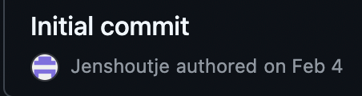

Reflectie
Gebruik AI-assistent
Zoals wellicht duidelijk is geworden, is er gedurende dit ontwerponderzoek intensief gebruikgemaakt van een AI-assistent. Een ‘nieuw’, maar inmiddels bijna onmisbaar begrip in de samenleving. Voor iedereen die dit op de een of andere manier is ontgaan: wat is een AI-assistent precies?
In een notendop is een AI-assistent een digitaal hulpmiddel dat gebruikmaakt van kunstmatige intelligentie (AI, Artificial Intelligence) om mensen te ondersteunen bij diverse taken, variërend van eenvoudige zoekopdrachten tot complexe inhoudelijke analyses. AI-assistenten zijn gebaseerd op geavanceerde algoritmes en machinaal leren. Deze modellen worden ontwikkeld door ze te "trainen" met enorme hoeveelheden data, die vervolgens de basis vormen van de kennis van het model.
ChatGPT is een bekend voorbeeld van zo'n AI-assistent, ontwikkeld door OpenAI in 2015. Dit taalmodel is getraind op omvangrijke hoeveelheden tekstdata, waardoor het natuurlijke, contextueel passende en inhoudelijk relevante antwoorden kan geven. ChatGPT kan informatie analyseren, teksten genereren, samenvattingen schrijven en complexe plannen uitwerken. Deze veelzijdigheid maakt het een steeds krachtiger wordend hulpmiddel.
Sinds het studiejaar 2023-2024 is het gebruik van ChatGPT en vergelijkbare AI-assistenten formeel toegestaan op NHL Stenden. Dit besluit weerspiegelt een verschuiving in hoe onderwijs aankijkt tegen technologische ontwikkelingen: niet als bedreiging, maar als kans om studenten op innovatieve wijze te ondersteunen. Wel vraagt verantwoord gebruik om transparantie, bewustzijn van beperkingen en een kritische houding bij interpretatie en toepassing van gegenereerde informatie.
Hoewel ChatGPT in voorgaande jaren persoonlijk werd ingezet voor het schrijven van samenvattingen, uitleg of plannen, zijn in dit ontwerpdossier bewust én onbewust echt de grenzen van zo’n model opgezocht, en tegen aan gelopen. Het idee van “eindeloze mogelijkheden” heeft gezorgd voor een enorm nieuwsgierig en gemotiveerde houding ten opzichte van het doen van onderzoek.
Het nieuwsgierig en gemotiveerd opzoeken van deze grenzen heeft geleid tot een resultaat wat, persoonlijk, nooit en ten nimmer voor mogelijk was gehouden. Zonder enige programmeervaardigheden is het met behulp van deze AI-assistent gelukt om een volledig functionerende, interactieve website te ontwikkelen die actief gekoppeld is aan Firebase en Go.Chart. Dit project laat zien dat zelfs zonder programmeerervaring innovatieve digitale oplossingen binnen handbereik liggen, mits er sprake is van een strategische inzet van beschikbare tools.
Tegelijkertijd realiseer ik mij dat het huidige prototype ook gezien kan worden als een demonstratie van wat technologisch mogelijk is, en niet noodzakelijkerwijs exact de vorm heeft die Alliade direct zou implementeren. Hoewel de tools en toepassingen binnen deze interventie voor de organisatie direct inzetbaar en overdraagbaar zijn, zie ik ook dat het pad dat ik heb bewandeld – met complexe omwegen via AI-tools en externe platforms als GitHub – mogelijk minder vanzelfsprekend is voor directe toepassing in de praktijk. Desalniettemin biedt dit traject waardevolle inzichten in hoe studenten in de toekomst eenvoudiger toegang kunnen krijgen tot krachtige technologieën, zonder diepgaande technische kennis. Mogelijkheden zoals real-time data en een compleet onderzoek dat nog lang actief kan blijven zonder enige menselijke actie zijn toch bijzonder.
Een cruciaal onderdeel van het ontwerpdossier is GitHub. GitHub is een online platform dat wordt gebruikt om digitale projecten – meestal software en websites – te hosten, beheren en delen. GitHub kan worden gezien als een versie van “Word of Windows”. Dit is het medium waar de code kan worden ingevoerd en waar de site wordt gehost. Hier komt ook de naam in de link vandaan: jenshoutje.github.io.
Voor alle data-gerelateerde functies, zoals de vragenlijsten, is gebruikgemaakt van publiek toegankelijke systemen als Google Firebase en de JavaScript-bibliotheek Go.Chart. Dankzij Firebase werd het mogelijk om data veilig en efficiënt te verzamelen, terwijl Go.Chart zorgde voor visueel aantrekkelijke en dynamisch geactualiseerde grafieken. Hiermee werd het ontwerp een levend, evoluerend product – niet statisch, maar actief reagerend op input vanuit de praktijk. Dit heeft niet alleen bijgedragen aan transparantie en gebruiksvriendelijkheid, maar heeft mij ook een dieper begrip gegeven van hoe data en technologie actief bijdragen aan continue kwaliteitsverbetering.
ChatGPT – Programmeren
Zoals NHL Stenden heeft beschreven, dient er te worden vermeld wanneer, waarom en hoe een AI-assistent wordt ingezet. Voor het programmeren van deze website is het lastig om antwoord te geven op deze vragen. In principe is alle code in eerste instantie geschreven door ChatGPT. De mate waarin AI in dit proces is ingezet bevindt zich in nieuw territorium. Wanneer mij zou worden gevraagd wie deze website heeft gemaakt, zou mijn antwoord niet ChatGPT zijn. Maar om mijzelf op deze plaats te zetten zou weer geen recht doen aan deze anders onmogelijke taak. “ChatGPT als middel”, als een brug om ideeën en een vleugje fantasie daadwerkelijk te vertalen naar een tastbaar resultaat.
Om de complexe samenwerking van mens en middel meer context te geven, volgt hier meer context over de digitale integratie:
- Vanaf circa 1 oktober 2024 is dit onderzoek van start gegaan, traditioneel in Word. In deze periode zijn o.a. de ‘Fly on the wall’ en ‘contextual interview’ tools uitgevoerd.
- Geïnspireerd door persoonlijke interesses is op dinsdag 4 februari 2025 de ‘initial commit’ ingevoerd en werd hiermee de website “Jenshoutje” gelanceerd. In dit stadium van het proces werd, in het kader van “eindeloze mogelijkheden”, gezocht naar een manier om het vervelende ‘transcriberen’ van de aankomende vragenlijsten te vermijden. 
Van het één kwam het ander –
Sinds dit oorspronkelijke idee zijn er anno eind maart in totaal 1262 individuele ‘commits’ ingevoerd. Oftewel, in het ontwikkelen van deze website is er 1262 keer code ingevoerd, aangepast, verwijderd of verbeterd.
Voor ruim 800 van deze commits is ChatGPT nodig geweest. Van deze 800 commits is er geen enkele geweest die met de eerste poging heeft gewerkt. Elke individuele poging is als idee ontstaan, handmatig ingevoerd, geëvalueerd en bijgestuurd.
“Elk succesvol geïntegreerd idee fungeerde als brandstof voor de volgende twee.”
Feedback
“Technologie niet als doel, maar als middel.” Buiten deze digitale reis om is er in het gehele onderzoek nauw samengewerkt met de praktijk. Hieronder vindt u de vergaarde feedback van onder andere studenten en stakeholders.
Feedback studenten
Datum: 18 maart 2025
Afkomstig van: Ruben
- Fan van creatieve en verfrissende aanpak.
- Als deze lijn wordt doorgetrokken, volgens eigen zeggen beoordeeld als voldoende of goed.
- Helder verwerkt, specifiek aandacht besteed aan apart kopje.
- Structuur, opbouw en samenhang als prettig ervaren; duidelijk waar je instapt door gestructureerde opbouw.
- Verslag in websitevorm als goed idee ervaren, maar momenteel nog erg verslagachtig. Suggestie: meer gebruik maken van interactieve middelen.
- Procesbeschrijving als sterk ervaren, ondanks dat onderwijsinstelling niet altijd up-to-date is.
- Aanbeveling: optimaliseer nog verder de schrijfstijl.
- Positieve waardering voor creativiteit en eigenheid.
Betekenis voor het onderzoek
Bij het toevoegen van meer interactieve elementen werd in de discover- en define-fase aanvankelijk een terughoudende houding aangenomen. De feedback van Ruben vormde echter een belangrijke inspiratie om tijdens de develop-fase meer gebruik te maken van interactieve en visuele elementen, zoals bijvoorbeeld het digitale schoolbord. Hoewel uitdagend en tijdsintensief—wat terug te zien is in het hoge aantal commits—zijn deze aanbevelingen expliciet meegenomen en verwerkt in het ontwerp.
Datum: 26 februari 2025
Afkomstig van: Susanne (praktijkbegeleider)
- Het uiteindelijke product moet overtuigend gepresenteerd kunnen worden, opvallend genoeg om mensen te motiveren er actief mee aan de slag te gaan.
- Advies gegeven om een korte, aansprekende verkoopboodschap te formuleren.
- Benadrukt om rekening te houden met niveauverschillen en digitale vaardigheden/interesses binnen het begeleidersteam.
- De gekozen aanpak (ontwerpquiz) als positief ervaren: kort en motiverend om in te vullen.
- Sterk positief ervaren dat begeleiders vanaf het begin actief betrokken zijn; verhoogt de kans op actieve deelname en blijvende interesse.
- Uitdrukkelijk enthousiast over het idee van automatisering van transcriptie, gezien eigen ervaringen met tijdrovende taken in het verleden.
Betekenis voor het onderzoek
De feedback van Susanne benadrukte de noodzaak van duidelijke en aantrekkelijke communicatie rondom het eindproduct. Hierdoor is extra aandacht besteed aan een heldere en motiverende presentatie van de interventie. Bovendien gaf het inzicht in het belang van praktische bruikbaarheid voor diverse gebruikersgroepen, wat leidde tot verdere vereenvoudiging en flexibilisering van het ontwerp. Tot slot bevestigde het belang van automatiseringsaspecten in het onderzoek, waardoor verdere integratie van gebruiksvriendelijke technologische oplossingen heeft plaatsgevonden.
Slotreflectie
Tot slot kijk ik terug op dit traject als een belangrijke persoonlijke en professionele ontwikkeling. Het intensieve samenspel met AI heeft mij geleerd dat innovatieve technologieën, mits bewust en ethisch ingezet, enorme kansen bieden voor kwaliteitsverbetering in het doen van onderzoek en voor toepassingen binnen het sociale domein—een trend die zich waarschijnlijk alleen maar zal voortzetten.
Tegelijkertijd heeft dit proces mij bewust gemaakt van de ethische en praktische grenzen van technologie. Hierdoor ben ik beter toegerust om in de toekomst op een kritische, maar ook optimistische wijze bij te dragen aan verdere technologische ontwikkelingen binnen het sociale domein.